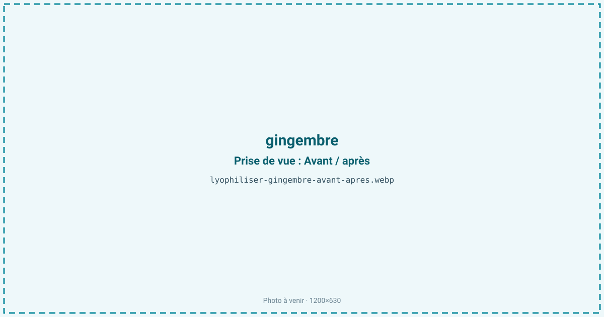
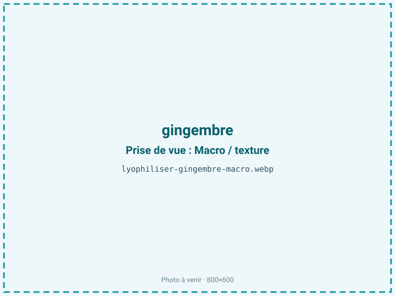
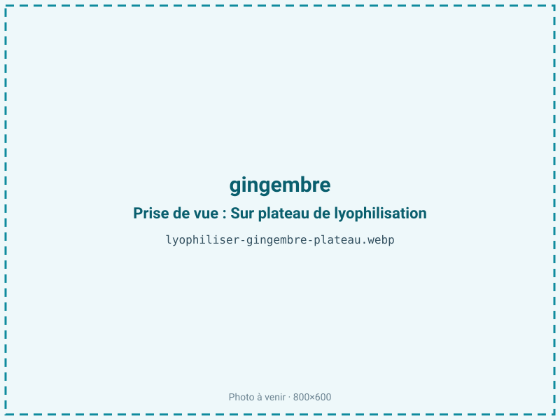
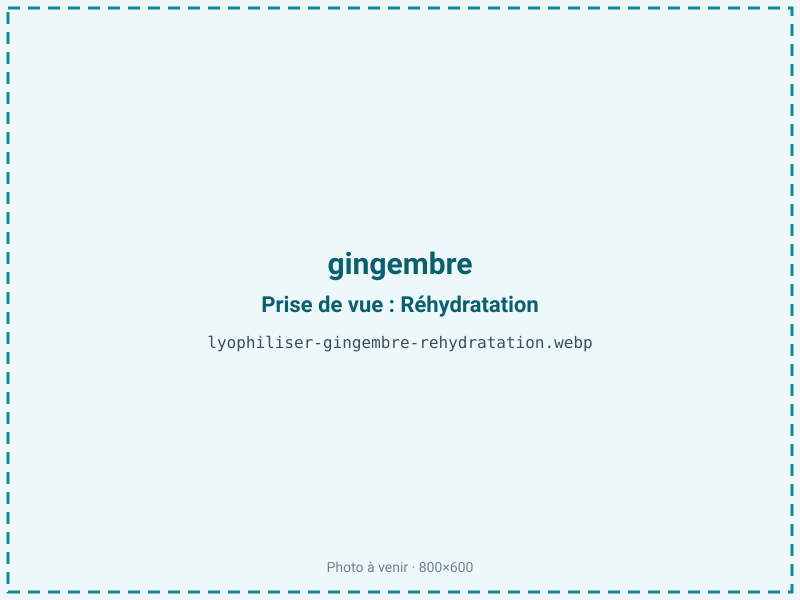

Lyophiliser du gingembre
Le gingembre frais est fibreux, encombrant et perd son piquant vif au séchage à chaud, qui transforme le gingérol en shogaol plus âpre. Le séchage sous vide — micro-ondes pour la poudre, lyophilisation pour un gingembre réhydratable premium — conserve le piquant frais et l'arôme citronné. On alimente épices, tisanes, shots et compléments.

En bref
Comment gingembre se comporte à la lyophilisation
Le gingembre est un rhizome fibreux à environ 82 % d'eau, riche en amidon (près de la moitié de sa matière sèche) et parcouru de faisceaux fibreux. Son piquant vient du gingérol, un composé thermosensible : dès qu'on chauffe, le 6-gingérol se déshydrate en shogaol, plus piquant mais plus âpre, et en zingérone au goût plus sucré. C'est exactement cette conversion qui distingue le gingembre frais du gingembre sec ordinaire.
L'arôme citronné et poivré tient à une huile essentielle (zingibérène, citral) volatile. À la congélation, l'eau des cellules cristallise ; la structure fibreuse et amidonnée ralentit ensuite la migration de la vapeur, ce qui impose une découpe fine pour que le front de sublimation traverse la tranche sans laisser de cœur humide. À froid, le gingérol est préservé quasi intact et l'huile essentielle reste en place : on retrouve à la réhydratation un piquant proche du rhizome frais, sans la dérive vers le shogaol propre au séchage thermique.
Paramètres de cycle
Éplucher et trancher finement, dans le sens perpendiculaire aux fibres, pour raccourcir le trajet du front de sublimation dans une matière dense et amidonnée. Congeler à −30 °C. En primaire, une clayette modérée convient ; on évite toute montée thermique marquée qui, même en fin de cycle, favoriserait la conversion du gingérol en shogaol et ferait dériver le piquant. Le gingembre étant maigre (moins de 2 % de lipides), une aw basse de 0,20 à 0,30 est visée : elle est favorable à la conservation et sans risque de rancissement. Le critère d'arrêt combine une aw inférieure ou égale à 0,30 et une tranche cassante, qui se broie nette en poudre. Pour un produit réhydratable premium, on privilégie la tranche entière ; pour la poudre d'épice de volume, le micro-ondes sous vide reste plus économique à qualité comparable.
Pièges connus
- Fibreux : trancher fin.
- Gingérol thermosensible : maîtriser la température.



Variantes & provenance
La maturité change le profil : le jeune gingembre (« gingembre nouveau »), peu fibreux et doux, sèche plus vite et donne un produit tendre, tandis que le rhizome mature, plus fibreux et plus piquant, concentre davantage de gingérol mais demande une découpe plus fine. La provenance pèse sur le piquant : un gingembre du Pérou ou du Nigeria est souvent plus vif qu'un gingembre chinois plus doux. On peut traiter le rhizome cru pour préserver le maximum de gingérol, ou un gingembre blanchi pour un résultat plus doux, avec des cycles et des rendements différents. Le calibre du rhizome influe sur la régularité de la découpe et donc du séchage.
Conservation & DLUO
Le gingembre est un produit maigre : le facteur limitant n'est pas le rancissement mais la reprise d'humidité, à laquelle s'ajoute la perte lente de l'huile essentielle volatile et une oxydation progressive du gingérol. Une aw basse lui est donc favorable, contrairement aux produits gras. La poudre est hygroscopique et se motte si elle reprend l'eau : un conditionnement barrière, de préférence avec absorbeur d'humidité, la garde fluide. Comptez 18 à 24 mois en barrière, à température ambiante et à l'abri de la lumière et de l'air pour limiter l'évaporation des arômes. Un contenant hermétique préserve le piquant frais du gingérol ; à l'air libre, la poudre perd d'abord son arôme citronné, puis son mordant. Un stockage au sec et au frais prolonge la tenue aromatique.
18 à 24 mois en barrière.
Estimez selon votre emballage :
Face aux autres procédés de séchage
Le séchage à chaud est la référence du gingembre sec, mais il transforme le gingérol en shogaol : le piquant change de nature, plus âpre et moins frais, et l'arôme citronné s'évapore. Le séchage à l'air est trop lent pour une matière aussi dense et laisse le temps aux fibres de durcir. Le micro-ondes sous vide donne une bonne poudre à coût maîtrisé et reste la voie économique pour du volume, mais son front chaud amorce lui aussi une part de conversion. La lyophilisation est la seule qui fige le 6-gingérol quasi intact et rend, à la réhydratation, un piquant proche du rhizome frais ; elle se justifie pour un gingembre premium et les usages où la fraîcheur prime.
Marchés & applications
Poudre d'épice premium au piquant frais, tisanes et infusions, shots de gingembre et boissons fonctionnelles, kombucha et sodas artisanaux, compléments digestifs, pâtisserie et chocolaterie. Les clients types sont les torréfacteurs d'épices, les marques de boissons et de shots, les brasseurs de kombucha, les fabricants de compléments et les chefs qui cherchent un gingembre au mordant préservé plutôt que le piquant modifié du gingembre sec classique.
- Poudre d'épice
- Infusions
- Compléments
Questions fréquentes — gingembre
Le gingembre lyophilisé garde-t-il le piquant du frais ?
Oui : le froid préserve le 6-gingérol, alors que le séchage à chaud le convertit en shogaol, plus âpre et moins frais.
Pourquoi trancher fin ?
Le rhizome est fibreux et amidonné ; une tranche fine laisse le front de sublimation le traverser sans laisser de cœur humide.
Lyophilisation ou micro-ondes sous vide ?
Pour une poudre d'épice en volume, le micro-ondes sous vide est plus économique. La lyophilisation s'impose pour un gingembre réhydratable premium au piquant frais.
Se réhydrate-t-il bien ?
Oui, la tranche lyophilisée regonfle et retrouve un mordant proche du gingembre frais, utilisable en cuisine et en boisson.
Combien de gingembre frais pour 100 g sec ?
Environ 600 g, le ratio étant proche de 6:1 pour un rhizome à 82 % d'eau.
Peut-on lyophiliser un jus de gingembre ?
Oui, mais le jus concentré se comporte comme un liquide sucré et fibreux ; un essai est conseillé, la tranche restant plus simple à stabiliser.
La poudre se conserve-t-elle longtemps ?
18 à 24 mois en barrière au sec ; elle est hygroscopique et perd son arôme à l'air, d'où un conditionnement hermétique.
Prochaine étape : envoyez-nous 200 g
Vous avez les repères du gingembre. La suite logique : nous envoyer un échantillon et repartir avec une fiche technique sur votre produit — rendement, aw finale, coût au kilo.
Tester du gingembre — 250 à 500 €Déductible de votre premier lot.